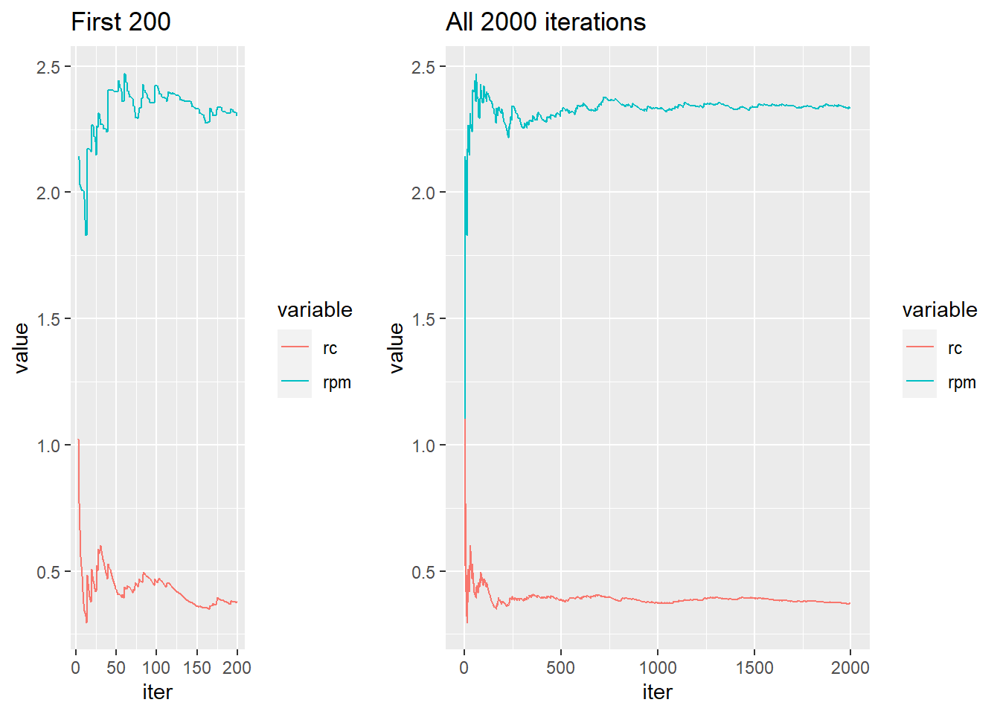

set.seed(1) # makes the experiment reproducible
m <- 2000 # number of simulated values
x <- 3 # observed data
# Now simulate some random variables
theta <- rcauchy(m) # simulate m standard Cauchys
h <- pi * exp(-0.5*(x - theta)^2) # who wants to write this over and over
Constant <- mean(h) # estimate normalizing constant
post.mean <- mean(theta * h)/mean(h) # estimate posterior mean #+end_srcThe setup
When doing statistics the Bayesian way, we are sometimes bombarded with complicated integrals that do not lend themselves to closed-form solutions. This used to be a problem. Nowadays, not so much. This post illustrates how a person can use the Monte Carlo method (and R) to get a good estimate for an integral that might otherwise look unwieldy at first glance. Of course, in this example, the integral isn’t very complicated. But the /method/ works the same, regardless of the mess in which we find ourselves. The current example is derived from one in Monte Carlo Statistical Methods by Robert/Casella (in Chapter 4). For that matter, check out their Introducing Monte Carlo Methods with R.
Suppose we have one observation \(X \sim N(\theta,1)\) but we have a (robust) prior distribution on \(\theta\), namely, \(\theta \sim \mathrm{Cauchy}(0,1)\). We would like to update our beliefs about \(\theta\) based on the information provided by \(x\). So our likelihood is \[ f(x\vert\theta) = \frac{1}{\sqrt{2\pi}}\exp \left[-\frac{1}{2}(x - \theta)^2 \right], \] and our prior is \[ g(\theta) = \frac{1}{\pi}\frac{1}{(1 + \theta^{2})}. \] The posterior distribution is proportional to the likelihood times prior, that is, \[ g(\theta\vert x) \propto \exp \left[-\frac{1}{2}(x - \theta)^2 \right] \frac{1}{(1 + \theta^{2})}, \] with the proportionality constant being the reciprocal of \[ C = \int \exp \left[-\frac{1}{2}(x - \theta)^2 \right] \frac{1}{(1 + \theta^{2})} \mathrm{d} \theta. \] Our point estimate (or best guess) for \(\theta\) will be just the posterior mean, given by \[ \mathbb{E} (\theta \vert \mbox{data}) = \frac{ \int \theta \exp \left[-\frac{1}{2}(x - \theta)^2 \right] \frac{1}{(1 + \theta^{2})} \mathrm{d} \theta }{C}. \]
We notice that the integrand for \(C\) looks like something times a Cauchy PDF, where the something (let’s call it \(h\)) is \[ h(\theta) = \pi \exp \left[-\frac{1}{2}(x - \theta)^2 \right], \] so one way to use the Monte Carlo method follows.
Procedure:
Given observed data \(X=x\),
- Simulate a bunch of Cauchys, \(\theta_{1},\theta_{2},\ldots,\theta_{m}\), say.
- Estimate the integral in the denominator with \[\frac{1}{m}\sum_{i=1}^{m} \pi\exp\left[-\frac{1}{2}(x - \theta_{i})^2 \right].\]
- Estimate the integral in the numerator with \[\frac{1}{m}\sum_{i=1}^{m}* \pi\theta{i} \exp \left[-\frac{1}{2}(x - \theta_{i})^2 \right].\]
- Take the ratio, and we’re done.
The Strong Law of Large Numbers says that the averages in 2 and 3 both converge to where they should, so the ratio should converge to the right place as well.
How to do it with R
The following is an R script which does the above. For laughs, let’s suppose that we observed \(X=3\).
At the command prompt
After copy-pasting the above into an R session we can see what the results were with an additional
Constant[1] 0.3724711post.mean[1] 2.334232For this simple example we can actually calculate what the true values are (to machine precision) with the following: for the constant \(C\) we get
f <- function(x) exp(-0.5*(x - 3)^2)/(1 + x^2)
integrate(f, -Inf, Inf)0.3416549 with absolute error < 1.3e-07so our estimate of \(C\) overshot the mark by about 0.03, and in the posterior mean case we get
g <- function(x) x * f(x)
integrate(g, -Inf, Inf)$value / integrate(f, -Inf, Inf)$value[1] 2.285139so our estimate of the posterior mean was around 0.05 too high. If we would like to get better estimates, we could increase the value of m = 2000 to something higher (assuming these things are actually converging someplace).
Are we waiting long enough?
Our estimates were a little bit off; we might like to take a look at a plot to see how we’re doing – is this thing really converging like we’d expect? We can look at a running average plot to assess convergence. If the plot bounces around indeterminably, that’s bad, but if it settles down to a finite constant, that’s better. Here’s a quick way to check this out with ggplot graphics.
rc <- cumsum(h)/seq_along(h) # running mean of C
rpm <- cumsum(h * theta)/cumsum(h) # running posterior meanNow we plot the results.
library(ggplot2)
library(grid)
A <- data.frame(iter = 1:m, rc = rc, rpm=rpm)
library(reshape)
A.short <- melt(A[3:200, ], id="iter")
a <- ggplot(A.short, aes(iter, value, colour=variable)) + geom_line() +
labs(title = "First 200")
A.long <- melt(A, id="iter")
b <- ggplot(A.long, aes(iter, value, colour=variable)) + geom_line() +
labs(title = "All 2000 iterations")
grid.newpage()
pushViewport(viewport(layout = grid.layout(1, 2, widths = unit(c(3,5),"null"))))
vplayout <- function(x, y)
viewport(layout.pos.row = x, layout.pos.col = y)
print(a, vp = vplayout(1, 1))
print(b, vp = vplayout(1, 2))
In this example, the estimates look to be still unstable at around m = 200, but by the time we reach m = 2000 they look to have pretty much settled down. Here we knew what the true values were, so we could tell immediately how well we were doing. On the battlefield we will not be so lucky. In general, with Monte Carlo estimates like these it is wise to take a look at some plots to judge the behavior of our estimators. If our plot looks more like the one on the left, then we should consider increasing the sample size. If our plot looks more like the one on the right, then maybe we would be satisfied with “close enough”. (We can always wait longer, tight purse-strings notwithstanding.)
Other approaches
When we were looking to estimate \(C\) we noticed that the integrand was something times a Cauchy distribution. If we look again, we can see that the same integrand also looks like a normal distribution times something. So, another approach would be to simulate a bunch of normals and average the new somethings. Do we get the same answer (in the limit)?
Yes, of course. It turns out, the approach simulating normals does a little bit better than the one simulating Cauchys, but they’re really pretty close. Check out chapter 4 of Monte Carlo Statistical Methods for discussion on this.
Where to find more…
The above is a variant of an example we did in STAT 5840, Statistical Computing. The entire course is available online at GitHub. Go to the Downloads for a .zip file or .tar.gz. Or, if you have git installed, you can get (git? har har) it all with
git clone git://github.com/gjkerns/STAT5840.git